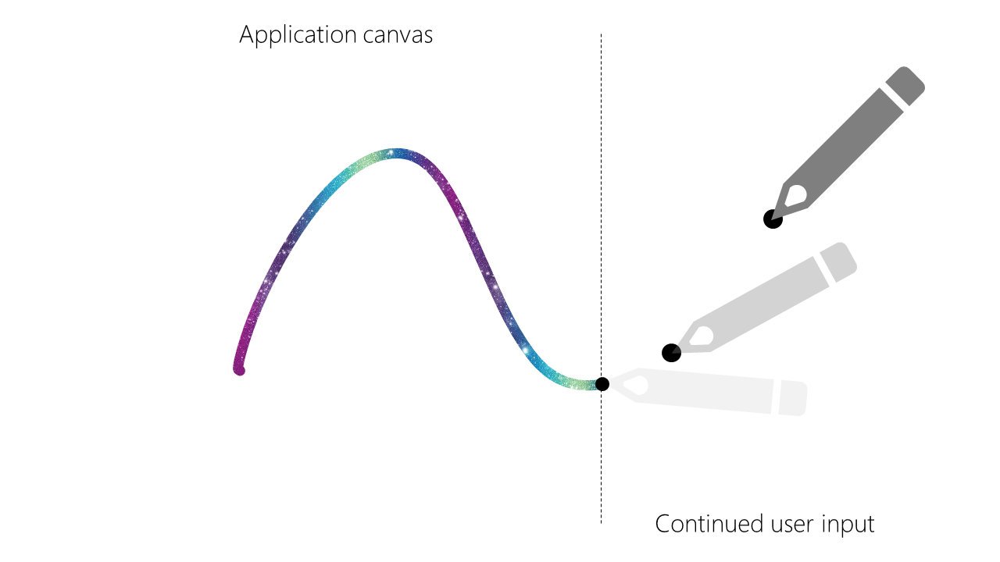
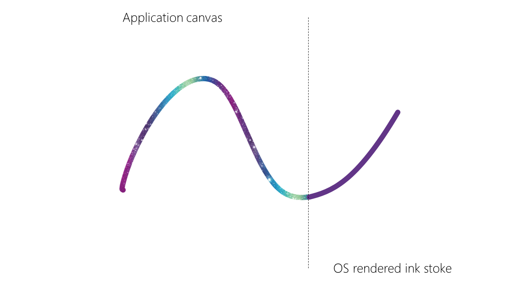
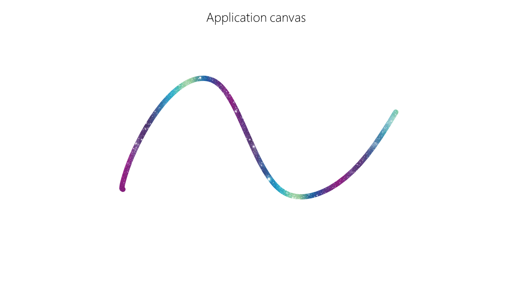

1. Introduction
Achieving low latency is critical to a great inking experience on the web. Generally, inking on the web involves consuming PointerEvent events and rendering strokes to canvas, WebGL, or even SVG.
While there are currently progressive enhancements available today, such as getPredictedEvents() and Desyncronized canvas, none of these take advantage of system compositors provided by the operating system to achieve better latency. Operating system compositors typically introduce a frame of latency in order to compose all of the windows together. During this frame of latency, input may be delivered to an application but the application will not be able to update the rendered frame with this new input until the next frame. System compositors may have the ability to handle this input on behalf of the application and update the current frame accordingly. The purpose of the Ink API is to expose this functionality of the system compositor to web applications as a progressive enhancement option that can achieve latency parity with native applications on supported systems. It is not a replacement for the existing progressive ink enhancements already in existance, but provides another option.
2. Scope
3. Ink API
3.1. Introduction
In order for the system compositor to be able to draw the subsequence input points with enough fidelity, the application needs to describe the last rendered point to the compositor. If the system knows the last rendered point, it can produce segments of an ink trail for pen input events that have been delivered to the web application but have not been rendered yet.For example, consider an application that has rendered all ink strokes up to the current frame of input:

Here, the pen has continued to move on the digitizer, but the application has not had a chance to process this input for rendering. To achieve a "superwet" inking experience, the system compositor needs to overlay ink segments for these inputs:

When the PointerEvent is delivered to the web application, the application can seamlessly replace the system compositor ink with application rendered strokes and update the compositor on the last event point that it rendered:

The Ink API provides the DelegatedInkTrailPresenter interface to expose the underlying operating system API to achieve this and keeps the extensibility open in order to support additonal presenters in the future.
3.2. Ink interface
[Exposed =Window ]interface {Ink Promise <DelegatedInkTrailPresenter >requestPresenter (optional InkPresenterParam = {}); };param
requestPresenter(param)-
This method returns an instance of an
DelegatedInkTrailPresenterobject within a Promise that can be used to render ink strokes in-betweenPointerEventdispatches. Each time this method is called, a newDelegatedInkTrailPresenterinstance must be created.
3.3. InkPresenterParam dictionary
dictionary {InkPresenterParam Element ?presentationArea =null ; };
presentationArea, of type Element, nullable, defaulting tonull-
An optional
Elementthat confines the rendering of ink trails to the area bound by the element. presentationArea must either be null or be in the same document as the Ink interface, otherwise throw an error and abort.
3.4. DelegatedInkTrailPresenter interface
[Exposed =Window ]interface {DelegatedInkTrailPresenter readonly attribute Element ?presentationArea ;undefined updateInkTrailStartPoint (PointerEvent ,event InkTrailStyle ); };style
presentationArea, of type Element, readonly, nullable-
A reference to the DOM element to which the presenter is scoped to prevent ink presentation outside of the provided area. This area is always the client coordinates for the element’s border box, so moving the element or scrolling the element requires no recalculation on the author’s part. If this is not provided, the default is to use the containing viewport. This element must be in the same document that the
DelegatedInkTrailPresenteris associated with and the same document that is receiving thePointerEvents, otherwise an error is thrown. If presentationArea is ever removed from the document, the next updateInkTrailStartPoint must throw an error and abort.
updateInkTrailStartPoint(event, style)-
This method indicates to the presenter which
PointerEventwas used as the last rendering point for the current frame. This must be a trusted event that is in the same document as theDelegatedInkTrailPresenter. The produced delegated ink trail must be rendered for the duration of the next animation frame and then removed.
3.5. InkTrailStyle dictionary
dictionary {InkTrailStyle required DOMString color ;required unrestricted double diameter ; };
color, of type DOMString-
This specifies a CSS color code for the presenter to use when rendering the ink trail. It must be a valid CSS color, otherwise throw an error and abort.
diameter, of type unrestricted double-
This specifies the diameter of that the presenter should use when displaying the ink trail. It must be greater than 0, otherwise throw an error and abort.
3.6. Ink Navigator interface extension
This partial interface defines an extension to the Navigator interface
[Exposed =Window ]partial interface Navigator { [SameObject ]readonly attribute Ink ink ; };
ink, of type Ink, readonly-
An instance of
Inkfor the current document. It must be associated with the same document that will contain thepresentationAreaand that will receive thePointerEvents to draw.
4. Usage Examples
function renderInkStroke( x, y, canvas) { // ... Render an ink stroke to the canvas ... } try { let canvas= document. querySelector( "#canvas" ); let presenter= await navigator. ink. requestPresenter({ presentationArea: canvas}); window. addEventListener( 'pointermove' , function ( event) { // Render all of the points that have come from the queue of events. let points= event. getCoalescedEvents(); points. forEach( p=> { renderInkStroke( p. x, p. y, canvas); }); // Render the ink stroke belonging to the dispatched event renderInkStroke( event. x, event. y, canvas); // Update the presenter with the last rendered point and give it a style presenter. updateInkTrailStartPoint( event, { color: "#7851A9" , diameter: event. pressure* 4 }); }); }